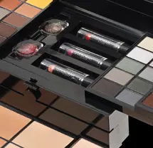
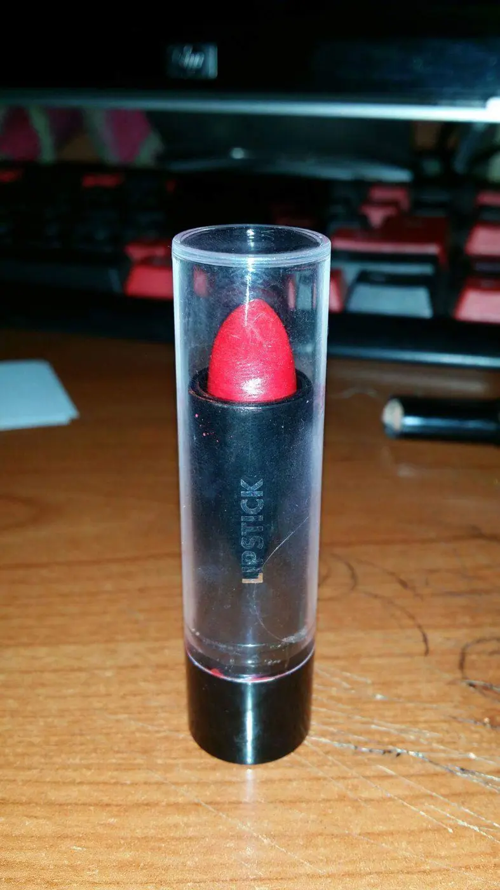
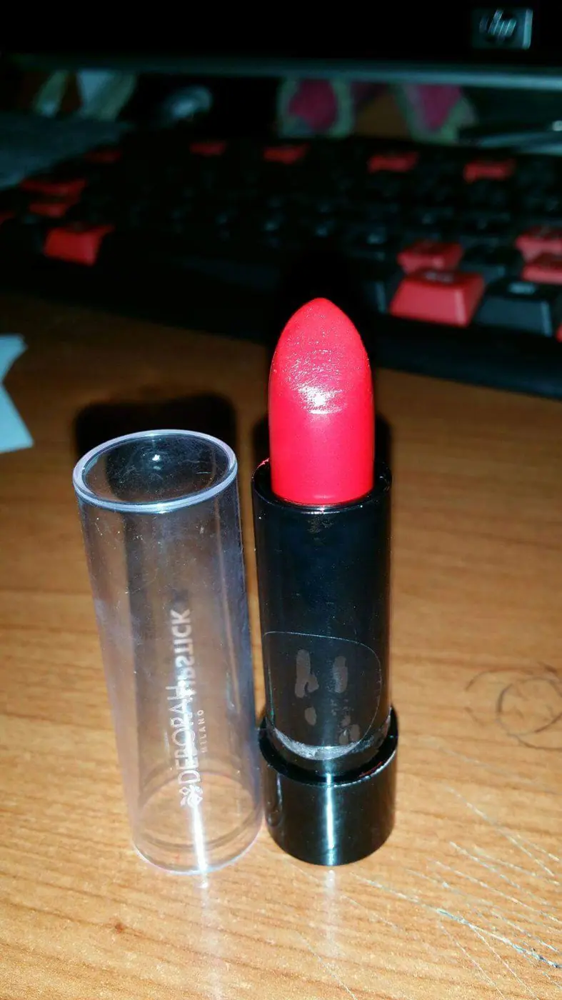
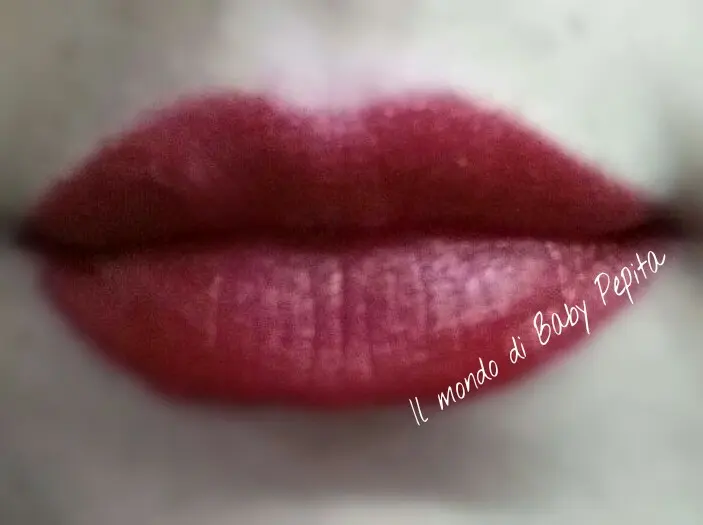
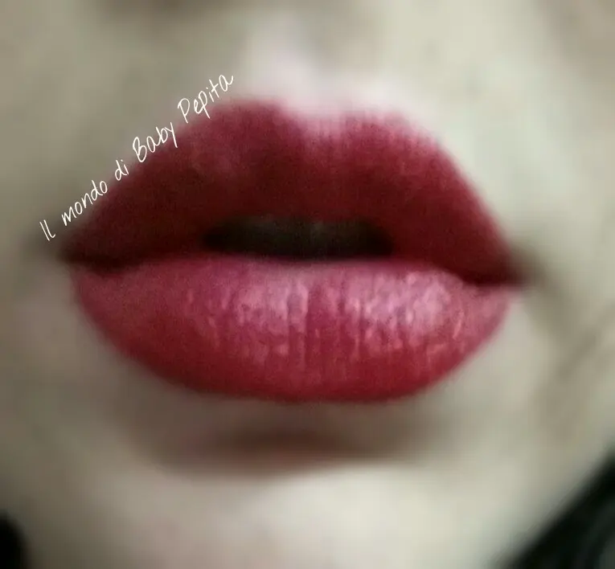
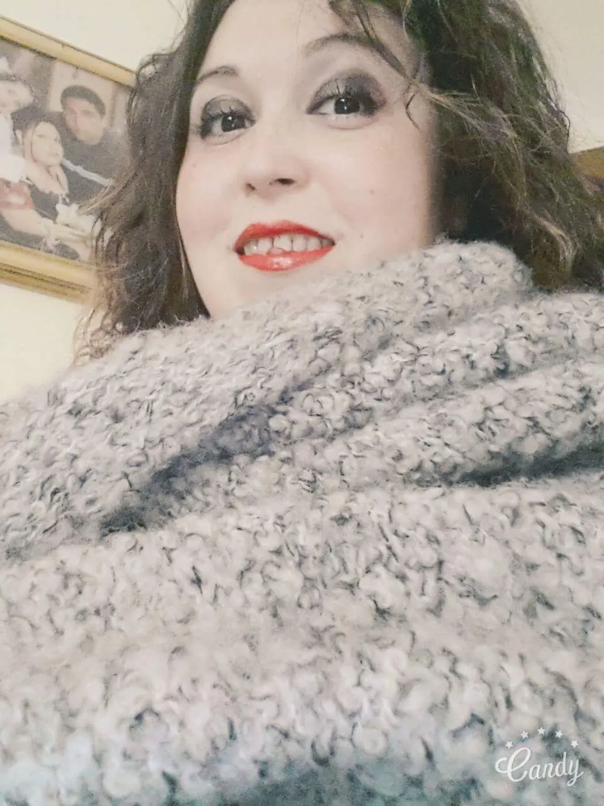

Rossetto rosso dalla trousse Deborah Milano simphony bag
Sapete da quando devo farvi vedere questo rossetto? Meglio non dirlo che faccio schifo proprio ahahah
In realtà ho aspettato perché oltre a testarlo per bene, volevo trovare il nome o il numero di questa tonalità ma è stato tutto inutile poiché essendo un rossetto estratto dalla trousse Simphony Bag di Deborah Milano (che ve ne parlai già se scendete giù), e allora non c'è nome. .

Ecco viene presentato insieme agli altri rossetti. .

Un rosso meraviglioso ragazze. . Il flash non da giustizia ma sulle labbra vi dico che è qualcosa di strepitoso. .

Sì presenta così, in un involucro nero con tappo trasparente .
Vi mostro dalle labbra di mia sorella che effetto fa

Vabbe tralasciando che madre natura è stata generosa con mia sorella e con me è stata restia sulle labbra hahahah, l'effetto è bellissimo. .
Lunga tenuta, riesce a stare fermo lì anche dopo aver mangiato e quindi per quanto riguarda la durata è 10 su 10

Idratazione perfetta, non secca per niente. .
Beh Sì dopo un pò doventa opaco ma non si formano ne righette sulle labbra e ne screpolature

Questo invece è l'effetto su di me appena steso e io sono soddisfatta ..
Vi dirò di più, mia sorella se l'è fregato ahahah